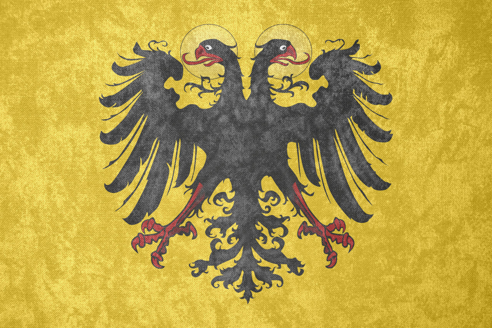

Holy Roman Empire for you...
The Holy Roman Empire (HRE) was a central European political entity that existed from 962 to 1806. Often described as a complex, decentralized realm, the empire encompassed a vast territory including modern-day Germany, Austria, the Czech Republic, and parts of Italy and France. It was neither "holy" nor "Roman" in a direct sense but was rooted in the legacy of Charlemagne’s empire, seeking to revive the glory of ancient Rome while uniting Christendom under a single authority.
The emperor of the HRE, traditionally elected by powerful princes, wielded influence over a patchwork of autonomous kingdoms, duchies, and principalities. However, real power was often fragmented, with local rulers maintaining significant autonomy. Despite this, the empire played a critical role in shaping the political and religious landscape of medieval and early modern Europe, particularly during key events like the Protestant Reformation and the Thirty Years' War.
Unlike the ancient Roman Empire or the Byzantine Empire, the Holy Roman Empire was primarily focused on preserving the unity of Christendom rather than expanding its borders. Its decline came as a result of internal fragmentation, external pressures from rising nation-states, and the Napoleonic Wars, leading to its formal dissolution in 1806.
This site is dedicated to exploring the history, structure, and significance of the Holy Roman Empire. Although the Roman Empire itself existed in various forms - such as the Eastern Roman (Byzantine) Empire and other medieval remnants - this site will focus exclusively on the unique history of the Holy Roman Empire.
Wait, there were more Roman Empires?
Many people find it confusing, but the Roman Empire didn't end with the fall of Rome in 476 CE. In fact, several different "Roman Empires" existed throughout history, each claiming to continue the legacy of ancient Rome in their own way. These empires, like the Byzantine Empire and the Holy Roman Empire, shaped European history long after the original empire fell. Below is a table of the most important Roman empires that emerged and their key features.
| Roman Factions | ||||
|---|---|---|---|---|
| Faction | Time Period | Key Features | Relation to the HRE | HRE? |
| Western Roman Empire | 27 BCE - 476 CE | The original Roman Empire in the West, it declined due to invasions, economic issues, and internal strife. Fell in 476 CE. | The HRE was seen as a successor state, attempting to revive the authority of ancient Rome, though with more focus on Europe. | NO |
| Byzantine Empire | 330 CE - 1453 CE | The Eastern Roman Empire, centered in Constantinople. Known for preserving Roman law, culture, and Christianity, and surviving long after the fall of the Western Empire. | The HRE and Byzantines both claimed to be the legitimate Roman Empire, often competing for influence in Europe. | |
| Carolingian Empire | 800 CE - 888 CE | Founded by Charlemagne, who was crowned as Emperor of the Romans in 800, reviving the Roman title. The Carolingian Empire laid the groundwork for the creation of the Holy Roman Empire. | Charlemagne's crowning in 800 CE directly inspired the later creation of the HRE in 962 CE. Charlemagne is seen as the first emperor in HRE tradition. | |
| Holy Roman Empire | 962 CE - 1806 CE | A decentralized empire in Central Europe, focused on maintaining unity of Christian realms. The emperor was elected and had limited direct control over the empire's many states. | This is the focus of the website. The HRE attempted to revive the Roman Empire in Europe but was more a political and religious confederation than a unified state. | YES! |